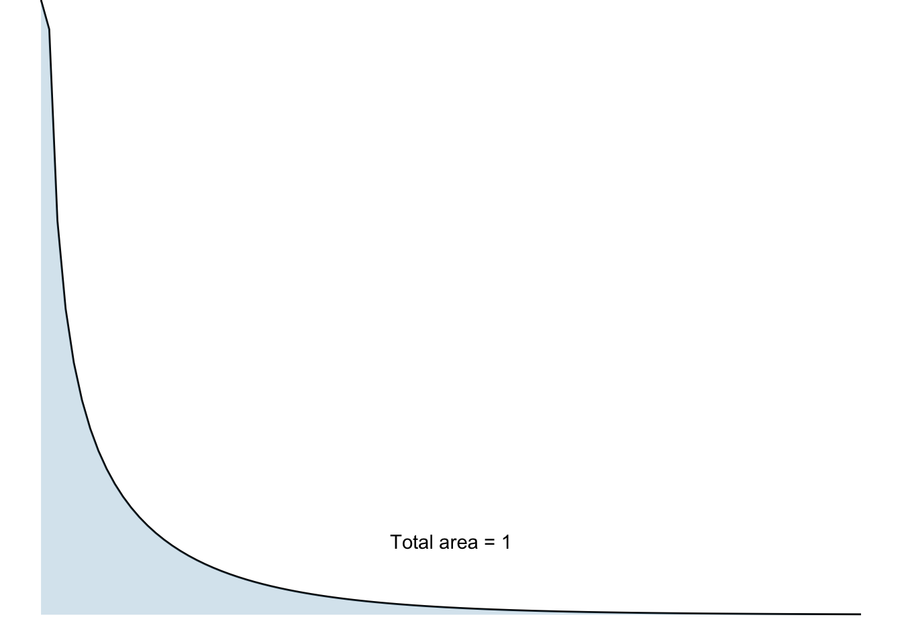
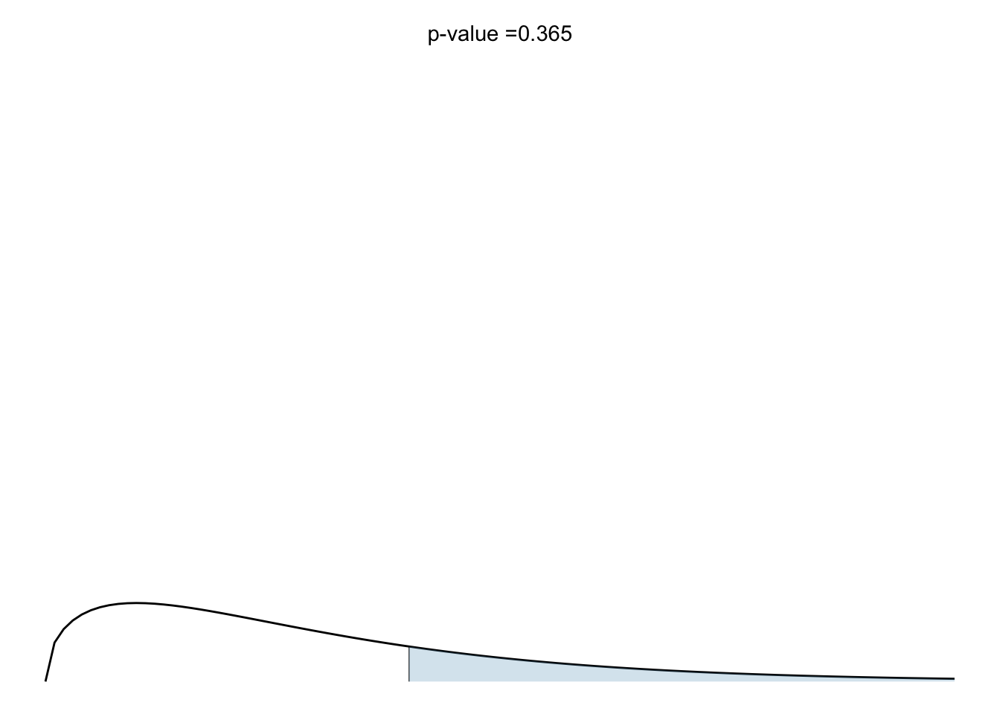

2 Chi-squared analysis of count data
A chi-square analysis is used when our data are in the form of raw counts for two or more categorical groups eg pea plants with either yellow peas or green peas, survival rate of mice if they took drug A or took drug B, etc. Each independent observation must definitely belong to either one group or the other, and there are no replicates. That is, for each category we just have one count.
What we do is compare the counts we got to some expected value according either to chance or to some prior theory.
For example:
If we were tossing a fair coin 1000 times we would expect 500 heads and 500 tails, ie heads and tails in the proportion 1:1. In reality, if the coin were fair, we would probably get roughly the same number of heads and tails, but not exactly 500 of each. How far from 50:50 would the proportion of heads and tails have to be before we would be justified in rejecting the idea that the coin is fair?
If we threw a fair dice a large number of times we would expect each possible score, from 1 to 6, to occur the same number of times. ie each score would occur 1/6th of the time. In reality we would probably get each score roughly 1/6 of the time, but not exactly 1/6. How far from the expected proportions could the numbers of each score have to get before we would be justified in thinking that the dice was not fair?
2.1 Chi-square goodness of fit test
In a chi-square ‘goodness of fit’ test, we are testing data where we have a number of counts for each of two or more possible outcomes of some procedure (heads/tails, dice scores etc). We have an idea of how these counts should be distributed under some null hypothesis (the coin is fair, the dice is fair, genetic inheritance works in this or that way etc). The chi-square goodness of fit test tests how likely it is we would have got the counts we actually got if that null hypothesis were correct. We are testing how well our actual counts ‘fit’ the expected values.
In a typical software implementation of the test, such as in R, we give it the counts we actually got for each possible outcome and also the expected proportion for each outcome. The test then gives us a p-value, a probability, for how likely it is that we would have got the counts we actually got, or counts even further from the null hypothesis, if that null hypothesis were correct. If this p-value is too small, and by that we usually mean less than 0.05, then we reject the null hypothesis.
2.1.1 Example: Mendelian Genetics
If the basic idea of Mendelian inheritance with independent assortment involving a single gene is correct, then we would expect that if we crossed a large number of pea plants that were heterozygous for yellow and green pea colour, as in the F1 genertion shown in Figure 2.1 with yellow being dominant, then the offspring would have yellow:green peas in the ratio 3:1 (plants with genotypes YY, Yy, yY would all have yellow seeds and only those with yy would have green seeds). In practice, if the inheritance were according to the simplest type of Mendelian inheritance (ie involving just one gene, amongst other things) we would probably get yellow:green offspring in a ratio that was approximately but not exactly 3:1. How far from 3:1 would the ratio need to be before we would justified in claiming that the outcome was inconsistent with the Mendelian prediction?
Suppose we have crossed pea plants that were all heterozygous for yellow/green pea colour. In the F1 generation we get 176 offspring , of which 130 were yellow and 46 were green.
The data here are raw counts, and an individual pea plant offspring contributes either to the yellow count or to the green count, but not to both.
Our expected counts of yellow and green are found by simply dividing the total count of offspring, 176, in the ratio 3:1, giving us an expected 132 yellow pea plants and an expected 44 green pea plants in the offspring F1 generation.
Doing the chi-square test manually
You would not normally do this, you would use software such as R, but for learning purposes let us go as far as we can in implementing a chi-square test on this data ourselves just to see the process behind it, then we can see how easy it is to do the test in R.
What we need to do is to calculate from our data a number that tells us how likely is it that we would have got totals for yellow and green pea plants as far or further from the expected 3:1 ratio as we did, if the null hypothesis of Mendelian inheritance were correct.
That is the very definition of a p-value! So that is what we need to calculate, a p-value.
It turns out that this p-value an be calculated from a number derived from the data that we call the chi-square statistic. This number is defined in such a way that the further your actual counts are from thier expected values, the bigger it is.
It is calculated by looking at the squared difference, for each count, between the observed value and the expected value. The squared thing is because we don’t care if the observed value is less than or more than the expected value. It is by how much that matters.
Here is the expression for the chi-square statistic:
\[ \begin{align} \chi^2 &= \sum_{i=\text{H,T}}\frac{(O_i-E_i)^2}{E_i}\\ &=\frac{(O_\text{Y}-E_\text{Y})^2}{E_\text{Y}} + \frac{(O_\text{G}-E_\text{G})^2}{E_\text{G}} \end{align} \] The first line is just a more compact way of witing the second line, where the \(\sum\) symbol means ‘sum over’ a heads term and a tails term, as laid out in the second line. \(O_\text{Y}\) and \(O_\text{G}\) mean the observed numbe of yellow and green pea plants respectively, while \(E_\text{Y}\) and \(E_\text{G}\) mean the expected numbers of each.
Defined in this way, the chi-square statistic \(\chi^2\)is a number that will always be positive (because it is the sum of squared terms, and they are always positive) and will be bigger the further from the expected values aour observed values turn out to be.
It is also a number that will vary each time you repeat the study because while the expected values \(E_i\) are fixed, the observed values \(O_i\) will vary from one occasion to the next. In fact, if you were to repeat the study many times and each time calcuate the chi-sqare statistic you would find that it follows a known distribution, the so-called (who would have thought it?) chi-square distribution, provided each count is greater than about five.
This last fact means that for our one study we can calculate the probability of getting a chi-squared value as great or greater than the one we got. This in turn means (becuase it is the same thing) that we can calculate the probability of getting data as far or further from the the expected values as the numbers we got - the magic p-value.
Finally, on that basis we can either reject or fail to rejct the null hypothesis.
Doing the chi-square test in R
What we do in R is use the chisq.test() function to see how likely it is we would have got counts of 130 and 46 if the null hypothesis, with its expected counts in the ratio 3:1, were true.
We do it like this:
chisq.test(c(130,46),p=c(0.75,0.25))
There are two arguments. The first is the counts we got, which we enter as a ‘vector’ c(z,y,....), so we write c(130,46). The second is a vector of the proportions we expect for the two counts, where these proportions should add up to one. So for our expected 3:1 ratio we enter c(0.75,0.25).
Let’s do it: type the above function into the console window (bottom left). You will get an output something like this:
Chi-squared test for given probabilities
data: c(130, 46)
X-squared = 0.1, df = 1, p-value = 0.7This output is typical of tests done in R. We get the ‘test statistic’ whose name varies depending on the test. Here it is called X-squared, pronounced chi-squared. This is a number that the test calculates, based on the data you have given it. For the most part, we don’t need to worry about how it does that. Then there is the p-value, which is the probability of getting this test statistic if the null hypothesis were true.
In this case, we see that the p-value is 0.73, which is large. We could very plausibly have got yellow:green numbers of 130 and 46 if the null hypothesis were true, so we cannot reject that null hypothesis. In other words, our data are consistent at the 5% significance level with the predictions of simple Mendelian inheritance.
Reporting the result in English
In English, we might report this result as:
We found counts of 130 yellow plants and 46 green plants, which are consistent at the 5% significance level with the predictions of Mendelian inheritance (chi-squared test, X-squared = 0.12, p=0.73).
Note that we do not say we have proved Mendelian inheritance to be correct. We haven’t. We never prove things in science. We haven’t said anything about the truth of the null hypothesis. All we can say is whether our data are or are not consistent with the null hypothesis. In this case they are. We then report the test we used and the values of the test statistic and p-value. Other tests might give you other details to report too.
2.1.2 Testing if Hardy Weinberg Equilibrium is satisfied
Suppose we have a population of people in which there is a gene that has two alleles A and a, where A is dominant. Suppose that being homozygous in the recessive allele a means that the individual is affected by sickle cell anemia. Being heterozygous Aa means that the individual is not affected but is a carrier and may pass the a allele on to their progeny. Those who are homozygous in the dominant allele A are unaffected.
Observed Frequencies
Suppose in a population of \(N=1100\) people the observed numbers of each genotype are as follows:
\[ \begin{align} \text{AA}_\text{O} &= 756\\ \text{Aa}_\text{O} &= 200\\ \text{aa}_\text{O} &= 144\\ \end{align} \]
where the subscript letter \(O\) denotes ‘Observed’
Calculate allele frequencies
Each person in the population carries two copies of the gene so the total number of alleles is \(2N\). We use \(p\) and \(q\) to denote the proportion of these that are \(A\) and \(a\) alleles respectively.
Each person who is homozygous in \(\text{A}\) carries two copies of the \(A\) allele while each heterozygous person carries one. \(p\), the proportion of all alleles that are \(A\), will be the number of \(A\) alleles in the population divided by the total number of alleles and will will be given by
\[ \begin{align} p &= \frac{2 \times \text{AA}_\text{O} + \text{Aa}_\text{O} }{2N}\\ &=\frac{2\times 756 + 200}{2\times 1100}\\ &=\frac{1712}{2200}\\ &=0.778 \end{align} \]
Similarly, \(q\), the proportion of all alleles that are \(a\), will be the number of \(a\) alleles in the population divided by the total number of alleles and will will be given by
\[ \begin{align} q &= \frac{2 \times \text{aa}_\text{O} + \text{Aa}_\text{O} }{2N}\\ &=\frac{2\times 144 + 200}{2\times 1100}\\ &=\frac{488}{2200}\\ &=0.222 \end{align} \]
[1] 1Expected under HWE
Under Hardy-Weinberg equilibrium, a key assumption is that there is random mating among individuals in the population. This means that the probability of an individual having any of the three possible genotypes is the product of the frequencies of the two alleles present for that genotype.
Hence, under Hardy-Weinberg individual, we would expect the following genotype frequencies:
| Genotype | Expected Frequency |
|---|---|
| AA | \(p^2\) |
| Aa | \(2pq\) |
| aa | \(q^2\) |
The numbers we would expect for each genotype, if Hardy-Weinberg equilibrium held would be these frequencies multipled by the total populations:
| Genotype | Expected Frequency | Expected Number |
|---|---|---|
| AA | \(p^2\) | \(p^2 \times N = 0.788^2 \times 1100 = 666\) |
| Aa | \(2pq\) | \(2pq \times N = 2\times 0.788\times 0.222 \times 1100 = 380\) |
| aa | \(q^2\) | \(q^2 \times N = 0.222^2 \times 1100 = 54\) |
Calculate Chi-squared statistic
\[ \begin{align} \chi^2 &= \sum_{i=1}^3\frac{(O_i-E_i)^2}{E_i}\\ &=\frac{(756-666)^2}{666} +\frac{(200-380)^2}{380} + \frac{(144-54)^2}{54}\\ &=246.5 \end{align} \]
[1] 246Calculate degrees of freedom
This is the number of independent pieces of information used in calculating the test statistics \(\chi^2\). In problems like this it turns out to. be equal to the number of gneotypes minus the number of alleles, so in this case the answer is 3 - 2 = 1. The underlying reason for this is that the expected genotype numbers are determined by the allele frequencies p and q. Since these must add up to one, that means that if either p or q is known, then so is the other. Hence there is only one degree of freedom.
Calculate p-value
[1] 1.54e-55So we reject the null.
X-squared
1.54e-55 Use built-in R function to calculate p-value
Chi-squared test for given probabilities
data: c(AA_o, Aa_o, aa_o)
X-squared = 246, df = 2, p-value <2e-16
Note


2.2 Exercises
Exercise 1
Suppose you tossed a fair coin 100 times and got 45 heads and 55 tails.
- Under a null hypothesis that the coin is fair, what would the expected numbers of heads and tails be?
You use R to do a chi-square test of that null hypothesis. Here is the code to do that and the output it would give:
chisq.test(c(45,55),p=c(0.5,0.5)) # we could leave out the second argument here
Chi-squared test for given probabilities
data: c(45, 55)
X-squared = 1, df = 1, p-value = 0.3What do you conclude?
How would you report the result?
Exercise 2
Suppose someone told you that the competence of scientists was linked to their astrological zodiac sign. I won’t name all of these, but there are twelve of them: Pisces, Scorpio, Cancer etc. To test this hypothesis, you spend a lot of time on Primo and identify 240 scientists, currently active, that have each published at least five papers in high impact journals in the last year. All of these people, you presume, are successful scientists. You write to each of them and ask them their date of birth. Amazingly(!), all of them respond. You then assign each of them to a zodiac sign according to their birth date and get the following counts for each sign:
In this code chunk we have typed out the counts and collected them as a vector, using the function `c()`. we have saved this under the name stars.
stars<-c(22,20,17,22,20,19,18,21,19,22,23,17)- What would be a suitable null hypothesis in this investigation?
- What proportion of the total count would we expect for each star sign if this null were true?
- The data meet the criteria required for use of a chi-square goodness of fit test. How can we tell?
- Use the
chisq.test()function to implement this test. - On the basis of the output of the test, do you reject the null hypothesis?
- Report the result of the test in plain English.
2.2.1 Solutions
Solution 1
The expectation is that half the outcomes would be heads and half would be tails.
The null hypothesis of this test is that heads and tails are equally likely, ie that the coin is fair. Under this null hypothesis the expected outcome is 50 heads and 50 tails. From the output of the R code we see that the p-value, the probability of getting an outcome as far or further from that, is 0.317. That is pretty high. Would you do anything if you knew that the probability of a bad (or worse) outcome was 0.317? In particular, this p-value is greater than 0.05, so we cannot reject the null hypothesis that the coin is fair. That is, even with a fair coin it is not at all unlikely that you would get head/tail numbers as different from 50/50 as 45/55 if you tossed the coin 100 times. That will happen about 1/3 of the time if you repeatedly do trials where you toss the coin 100 times.
To report this result, you might say something like
From 100 coin tosses we got 45 heads and 55 tails. These counts are consistent at the 5% significance level with the coin being fair (chi-squared test, X-squared = 1, df = 1, p = 0.317).
Solution 2
- H0: There is no association between the astrological star sign of a researcher and their success in science (who knew?)
- One twelfth for each sign ie a researcher is as likely to have one star sign as any other.
- These are count data, there are at least five counts for every sign and the counts are independent - any individual researcher only contributes to one of the twelve counts.
- Note that we do not need to include the second
p=...argument in this case since the default presumption, that all proportions are equal, is true here.
Chi-squared test for given probabilities
data: stars
X-squared = 2, df = 11, p-value = 1- We see that the p-value is almost one so we emphatically do not reject the null hypothesis.
- We find no evidence that star sign affects success in science (X-sq=2.29, df = 11, p=0.997)
Note the degrees of freedom that is reported: df = 11. The degrees of freedom is the number of independent pieces of information. Here, given that we know the total number of researchers, only eleven of the individual counts are independent. Once they are known, the twelfth can be calculated.